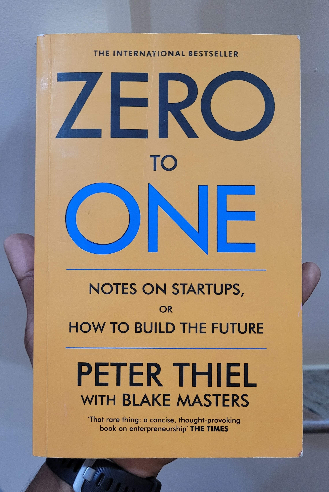

• The single most powerful pattern noticed is that successful people find value in unexpected places and they do this by thinking about business from first principles instead of formulas.
• "What important truth do very few people agree with you on?"
Answer like, most people believe in X, but in truth it's opposite of X.
PT: "Most people think the future will be defined by globalization, but the truth is that technology matters more."
• Opposite yet right principles after dot-com crash:
1. It is better to risk boldness than triviality.
2. A bad plan is better than no plan.
3. Competitive markets destroy profits.
4. Sales matter just as much as the product.
• Creating value is not enough; you also have to capture it, e.g., Airlines industry vs Google.
• Ask yourself: How much of what you know about business is shaped by mistaken reactions to past mistakes?
• It's really competition, not business, that is like war: allegedly necessary, supposedly valiant, but ultimately destructive.
• If you're less sensitive to social cues, you're less likely to do the same thing as people around you.
• Competition can make people hallucinate opportunities where none exist.
• Competition is better a destructive force than a sign of value.
• The value of a business today is the sum of money it will make in the future.
• Characteristics of Monopoly:
1. Proprietary technology
- Be at least 10 times better than substitutes.
- Ex. PayPal made buy/sell on eBay 10 times better; Amazon, 10 times more books.
2. Network effects
- To reap this, first users of a small network should find the product valuable.
3. Economies of scale
- A good startup should have potential for great scale built into its first design.
4. Branding
• Building a Monopoly:
1. Start small and monopolize.
- Start with very small markets.
2. Scaling up.
3. Don't disrupt.
- Attracts bad attention, e.g., Napster.
- Do not directly challenge.
4. The last will be first.
- Make the last great development.
• Optimists embrace the future; pessimists fear it.
• Progress without planning is what we call evolution.
• Jobs designed his business with multi-year plans; forget MVP.
• A business with a good definite plan will always be underrated in a world where people see the future as random.
• The biggest secret in venture capital is that the best investment in a successful fund equals or outperforms the entire rest of the fund combined.
Great companies can be built on open but unsuspected secrets about how the world works.
• Two types of Secrets:
- What secrets is nature not telling?
- What secrets are people not telling?
• Thiel Law: A startup messed up at its foundation cannot be fixed.
• Distinguish Ownership, Possession, Control.
• Most conflicts erupt between ownership and control.
• In no case should a CEO of an early-stage venture-backed startup receive more than $150,000 PA salary.
• Equity may not create perfect incentives, but it's the best way for a founder to keep everyone aligned.